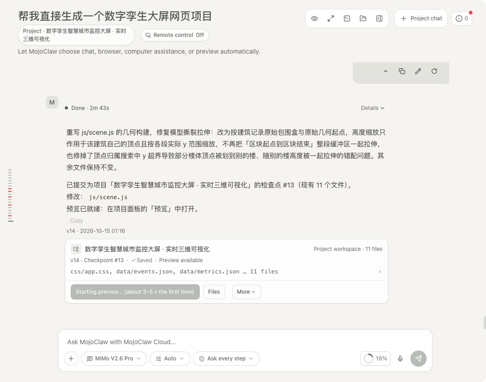
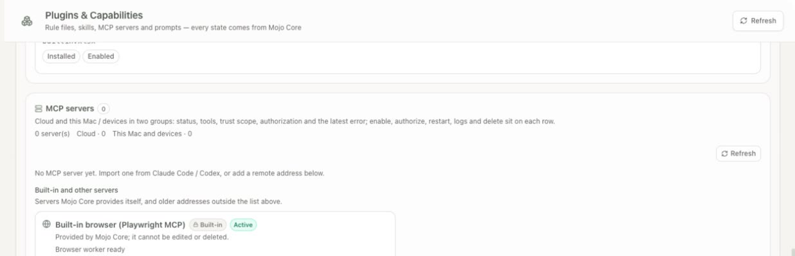
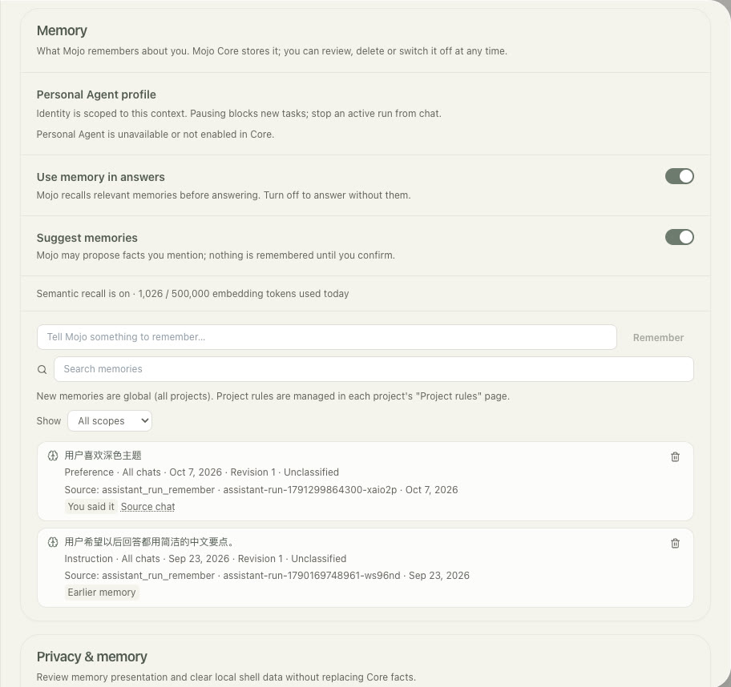

Interfaces guess.
After a refresh, a cancel or a retry, a UI that keeps its own copy of the truth drifts. Core keeps the run, its ordered events and its final state, so every client recovers the same answer.
Shared authority · Gateway, runs, models, permissions
Mojo Core is the shared authority behind MojoClaw and MojoAX. Identity, projects, runs, model routing, permissions, memory and the usage ledger live in Core; the product apps render its facts and forward your decisions.
Running in the dev buildPrivate · development deployment · cloud deployment planned

media/claw/session-info-popover.jpg
After a refresh, a cancel or a retry, a UI that keeps its own copy of the truth drifts. Core keeps the run, its ordered events and its final state, so every client recovers the same answer.
Model choice, provider quirks, caching and cost belong in one place, measured per call.
Skills, MCP servers and device access extend what a model can do. Core binds each grant to a scope and records what was used.
Each item carries its real status. 5 of 6 screens on this page are captured from the running app; the rest are labelled placeholders.
Runs and their events are stored in PostgreSQL in order. Clients resume from a cursor over SSE; idempotency keys stop duplicate submits; success, failure, cancellation and timeout end the same way everywhere.

media/claw/project-checkpoint-card.jpg
Cloud projects keep files and versioned checkpoints. Previews run from a signed URL in an isolated runtime.
media/claw/project-checkpoint-card.jpg
Context usage, connectors, outputs, memory and activity are Core facts. MojoClaw displays them and never invents a second version.
media/claw/session-info-popover.jpg
Each user keeps a catalog of models. The selected model governs every call of a run, including utility steps; substitutions are visible and recorded.
Every model call records input, output and cached tokens where the provider reports them, so cost questions are answered from data rather than estimates.
Core issues a runtime spec; the Runner on the user's computer executes inside bound folders and reports facts back. Strict local mode keeps content on the device.
Transport and execution site are separate settings. Local servers run on the device and are never silently moved to the cloud; grants cover named tools, data scope and side effects; server-declared hints are treated as untrusted.

media/claw/plugins-mcp-builtin-server.jpg
A model-led loop with an append-only context, a stable prompt prefix, compaction at safe boundaries, provider adapters with prompt caching, rule files and skills. It stays behind switches while development continues.
Memory is stored in Core and reviewable. Project rules live in the project's AGENTS.md; CLAUDE.md is read but never written.

media/claw/settings-privacy-memory.jpg
TypeScript contracts are the single definition shared by Core and the apps, with SDK packages for JavaScript, Python, Swift and Kotlin. Database migrations are append-only and never rewritten.
Core is the only component that talks to model providers, holds run state and decides permissions. Apps and the Runner talk to Core; nothing talks around it.
An illustrative flow, not a recorded session.
An app sends a message with the user's session. Core derives identity and tenant from the session, never from headers the client sets.
It resolves the project, the model, rules, skills and the tools allowed in this scope.
The model works in turns; tools execute in Core, in an isolated preview, or on the user's device through the Runner.
Events, outputs, checkpoints and usage are stored in order as they happen.
Web, desktop or a reconnecting tab replays from its cursor and lands on the same state.
Self-asserted identity headers are rejected; tenant and actor come from the authenticated session.
Approval covers a named server, account, tool set, data scope and side effects. Wider scope asks again; the same scope does not.
An offline device makes its tools unavailable. Core does not reroute local material through the cloud to finish a task.
Cache savings and costs are reported from provider usage fields per call, with unknowns recorded as unknown.
Published migrations are never edited; rollbacks are new migrations.
Updated 18 October 2026. "Running in the dev build" means the owner's private deployment, not a public release.
| Item | Status | Note |
|---|---|---|
| Durable runs, replay, idempotency, terminal states | Running in the dev build | Backbone of every run. |
| Projects, checkpoints, signed previews | Running in the dev build | |
| User model catalog and per-run model policy | Running in the dev build | |
| Identity and authority hardening | Running in the dev build | Session-derived tenant, authenticated push, rate limits. |
| Agent kernel V2 with rule files, skills and MCP | In development | Behind switches; off by default. |
| Provider adapters with cache-write accounting | In development | |
| Continuous tasks persistence | Planned | Follows the MojoClaw continuous-task design. |
| Cloud deployment | Planned | |
| Regional policy layer | Planned | Kept separate from development, added before launch. |
No. It is the foundation that MojoClaw and MojoAX share. It has no interface of its own; the screenshots here show MojoClaw displaying Core's state.
No. Fairy has its own Core. Mojo Core serves the Mojo products only.
No. The source is private. This page summarises design and verified behaviour without publishing code, hosts or keys.
Not claimed. It runs a private development deployment every day; cloud deployment and public launch are still ahead.